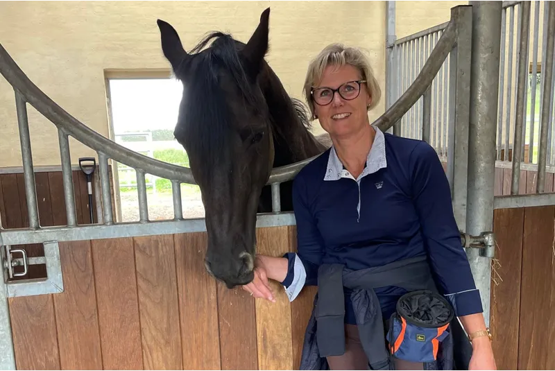

Livsglæde & Selvværd
Vi lever i en meget udfordrende verden i dag med megen påvirkning fra gode og mindre gode sider, som nemt kan komme til at udfordre os så meget, at vi mister troen på vores eget værd og formåen. Vi mister også ofte den indre ro, som ellers gør at vi har større styrke til at bevare vores selvværd. Den kan genfindes i samarbejdet med hesten - læs mere under hvad er det hesten kan nedenfor. Jeg hjælper via hesten i helt rolige omgivelser, hvor vi kun er dig, f.eks. som forælder, dit barn, hesten og jeg.
